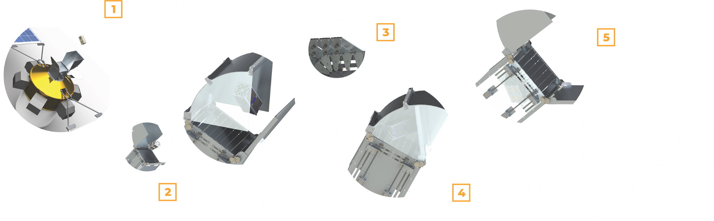

Debris Capture Sequence

Functioning Prototype

Inner garage doors working

Outer quarter cylinder and flap working
Outer Aperture
The outer section of DEMI is two hinging doors. The first
is a quarter circle. In our protoype, this door has a polycarbonate cover.
In practice this would be aluminum as with all other parts. The second door is a flat
flap that can move within the circular door while minimizing gaps.
Upon approaching a piece of junk, both doors open. Then once the object is
in grabbing range, the doors close, encapsulating the object.